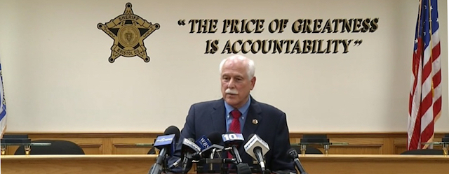

2018-06-22 08:00

Last week Bristol County Sheriff Tom Hodgson went before the cameras to demand an apology from the Attorney General. He should have instead taken the opportunity to apologize to the people of the Commonwealth.
Maura Healey heard the growing complaints about abuses at Hodgson’s facilities — the highest suicide rate in the state, high recidivism, abuses of the mentally ill, overuse of solitary confinement, chronically overcrowded and dirty facilities, inadequate food and denial of medication and medical care, kickbacks from a phone vendor, civil rights violations of inmates, and violation of the Supreme Judaical Court’s ruling on ICE detentions. Hodgson is knee deep in lawsuits. The Attorney General was duty-bound to address the worst of the abuses so she sent a letter to Executive Office of Public Safety and Security’s Daniel Bennett asking him to investigate.
But to hear Tom Hodgson tell it, it’s all a big Democratic witch hunt. “It smacks of partisan politics, given my work on immigration.” His “work,” as he puts it, consists of relentless shilling for the Federation for American Immigration Reform (FAIR), which the Southern Poverty Law Center lists as a hate group. On any given day Tom Hodgson can be heard on talk radio conflating immigrant children with MS-13 gang members, suggesting that Massachusetts mosques are Al Qaeda recruiting stations, or that immigrants are disease vectors. You probably heard him grandstanding from the Rio Grande or testifying for anti-immigrant legislation in Washington. Hodgson fancies himself an immigration expert but he can’t even handle the job he was actually hired to do — competently running a county jail.
Hodgson has only himself to blame for his jail’s suicide rate. “If something happens to me, I want people to know that I’ve been getting no help, no matter how many mental health slips I’ve put in,” Michael Ray wrote shortly before his suicide. Only weeks before, an article in the Globe asked, “Why Is The Suicide Rate In Bristol County Jails So High?” If Hodgson’s’ talk radio schedule hadn’t been so full he might have rolled up his sleeves and done something about it.
But on June 1, 2017 Tom Hodgson was having brunch with the Mass Fiscal Alliance, a group that promotes anti-immigrant rhetoric just like the Federation for American Immigration Reform, where Hodgson sits on the advisory board with its white supremacist founder, John Tanton. Nine days later Michael Ray was dead. Two weeks after Ray’s death, on June 28th, Hodgson was back flogging anti-immigrant talking points at a far-right event called “Hold Their Feet to the Fire.” Hodgson appeared with gay-basher Sandy Rios, FAIR president Dan Stein, VDARE contributor Michelle Malkin, white nationalist Congressman Steve King, Muslim-basher Robert Spencer, and Sebastian Gorka, another self-styled “Muslim expert” whose ties to a Hungarian Nazi group were too much for even the White House. Rather than dealing with the suicides Hodgson had better things to do.
So hats off to Maura Healey. She has nothing to apologize for. Unlike Hodgson, she’s actually doing her job — which includes seeking justice for those abused, neglected, and left to die by callous disregard for their human rights. The Sheriff must be held accountable. There is such a level of willful neglect and poor leadership at the Bristol County House of Correction that it is an insult to hear the Sheriff demanding an apology for the many lawsuits he has brought upon himself and his staff.
It is Tom Hodgson who owes us an apology.